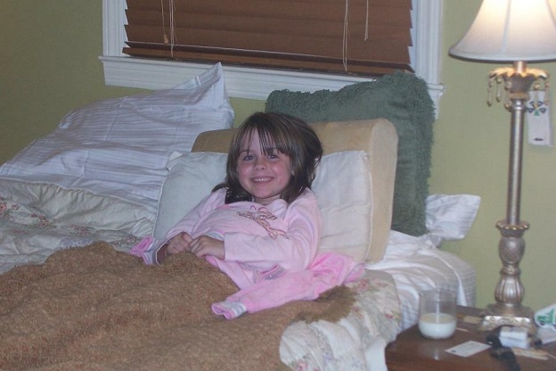

I was born on December 12th, 2000 in Greenwood, South Carolina. My parents got divorced when I was two. So I lived with my mom in Belton, South carolina, till I was 5. Then she got married again and we moved to Inman. It's a very small town with a one street downtown, and a Mcdonalds. That's pretty much it. I went to school there, till 6th grade. Then I moved to Greenville.
I love my family. Even though they get on my nerves sometimes, I still love them. My mom's name is Angelia, and my dad's name is Brian. Now you might see where I got my name from. Also I have a stepmom and her name is Tracy. I have 2 brothers and 2 sisters. There is Evan, Kinsey, Annabelle, and Ella. They are all pains, but I love them all dearly. But my favorite would have to be Annabelle because she is the cutest little nugget. Also I have some grandparents, my Meme is literally my second mom. She is always there for me if my mom isn't.
Some things I do now to waste time is watch netflix and spending time with friends. Usually when I get home from school I grab a packet of fruit chews, and watch some Good Luck Charlie on Netlflix. I watch wayyy too much Netflix. Secondly is spending time with friends. I love taking my best friend Morgan places, and getting food. We just started getting breakfast in the morning before school. The whole waking up at 6:00 and leaving the house at 7 isn't ideal. But Greenfield's brown sugar bagels makes up for it.
My plans after high school is to go to college. My choices are College of Charleston, UNC, Clemson, or Lander. I want to be a physical therapist and major in sports medicine. The dream is to be a sports team physical therapist. I want to be one of the people that run out on the field if one of the players get hurt. Which means I want to go to MUSC after college.